[Python] 01. Python3をインストールする方法(Anacondaインストール)
こんにちは。明月です。
この投稿はPython3をインストールする方法(Anacondaインストール)に関する説明です。
ユーザーがプログラムでPCを扱う方法に関して三つがあります。
一つはシェルコマンドで操作する方法、二つはプログラム(コンパイルになったプログラム)を実装して実行する方法、最後にスクリプトを作成して実行する方法があります。
スクリプトとは一応プログラム言語ですが、C++やJavaみたいにコンパイル(作成したソースを機械語で変換する作業)でバイナリコードに変換することではないですが、シェルみたいに会話式で一つのコマンドで実行することではなくプロシージャ(作業順番)を配置して実行することです。
簡単にコンパイルプログラムとシェルコマンドと半分ずつ混ぜているプログラム言語だと思えばよいでしょう。
スクリプト言語では代表的な言語はPython、Javascript,PHPがあります。
PHPとはスクリプト言語ですがウェブサーバーサイドで使う言語だし、Javascriptはウェブクライアント側でよく使うプログラム言語です。Javascriptの場合はnode.jsを利用してローカルでも使えますが、個人的にnode.jsとPythonの選択肢があればPythonがもっといいではないかと思います。
なぜならPythonの場合はnode.jsよりコミュニティサイズやライブラリの量を考えてもnode.jsより何倍に大きいしプログラム開発もJavascriptよりもっと簡単だし、理解しやすいのでPythonを選択して運用するほうがいいではないかと個人的な考えです。
これからPythonをインストールしましょう。
Pythonを直接にホームページに接続してダウンロードしてインストールすることができます。
link - https://www.python.org/
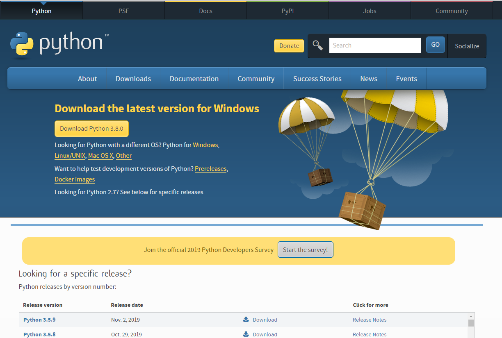
Pythonホームページで直接にダウンロードしてインストールすれば、後に必要なライブラリがあるとき別々にすべてインストールしなければならないです。でもよく使うライブラリパッケージを含めているPythonバージョンがあります。それがAnacondaです。
Anacondaをインストールするほうが様々ことに楽でしょう。
link - https://www.anaconda.com/distribution/
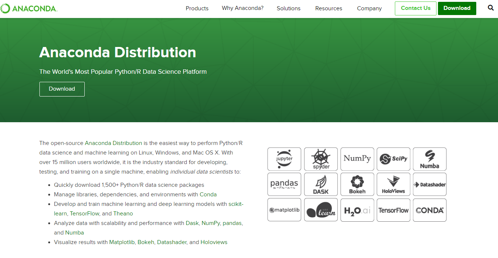
バージョンは3.Xバージョンと2.Xバージョンがあります。参考に2.Xと3.Xは全然違うPythonです。
3.Xが2.Xより最新バージョンなことはあってますが、32Bit環境から64Bitに環境バージョンアップすることでデータタイプや様々なタイプ変更になって互換性でバージョンを分離したではないかと思います。
Pythonの創始者グイド・ヴァンロッサムはPython2はバグアップデータはしますが、もうバージョンアップやライブラリ支援もないし、すべてはPython3に続けますと言いました。
始めに使うユーザーならPython3を利用しましょう。
それならダウンロードしてインストールしましょう。
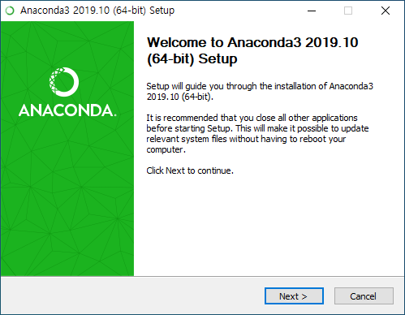
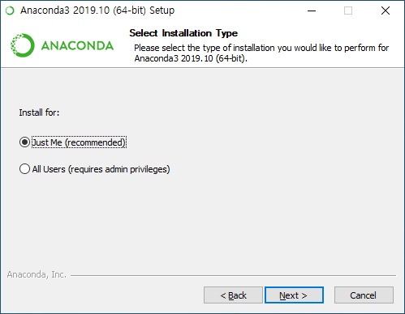
Pythonの場合はPCにあれば様々ところで使えるのでAll Usersでインストールしてもよいです。
私の場合は一応Just Meでインストールします。(パソコンセキュリティの問題があるため)
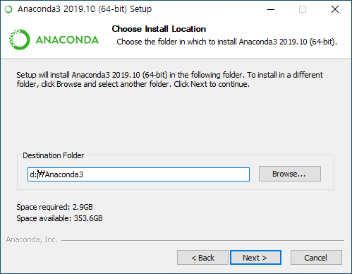
基本ディレクトリもよいですが、CMDコマンドWindowで作業する時もありので、できればアクセスがしやすいディレクトリに設定するほうがよいです。
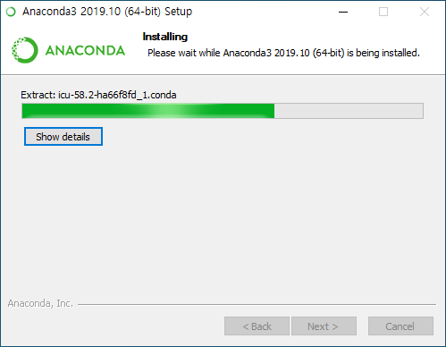
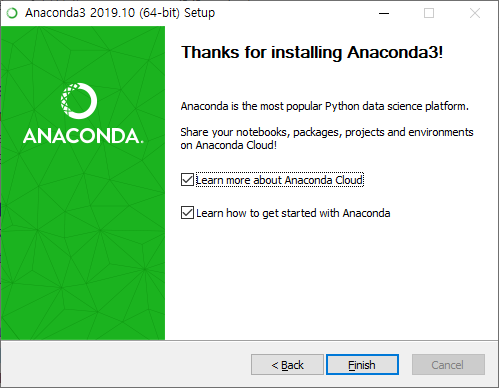
インストールが完了しました。
これからCMDコンソールを開いてバージョン確認とHello worldをコンソール出力します。
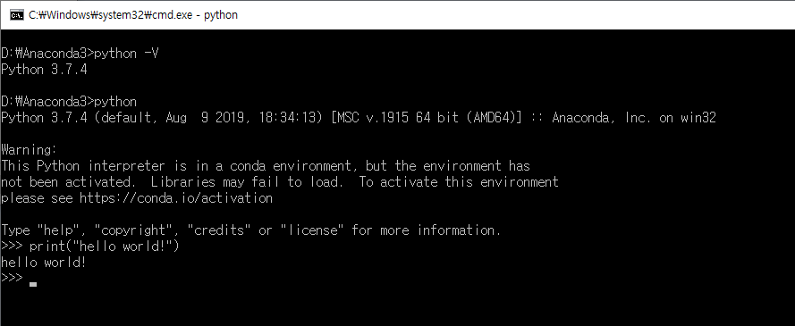
PythonのIDEツールはjupyterといういいツールがあります。Anacondaでインストールしたらjupyterが基本的にインストールされます。
Startボタンを押下して次のIconを探しましょう。
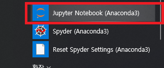
実行すれば下記のコンソールWindowが出ます。
jupyterは自動にブラウザで開けますが、もし開かない場合はlocalhost:8888?token=xxxをコピーしてブラウザのURLアドレスに貼り付けましょう。
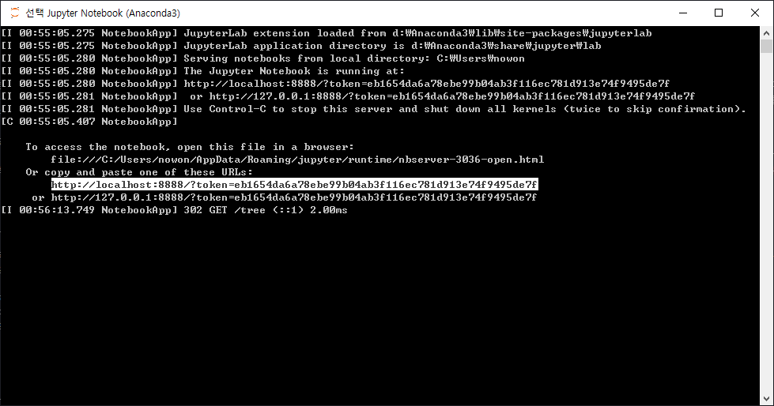
そうするとjupyterが実行される画面が出ます。
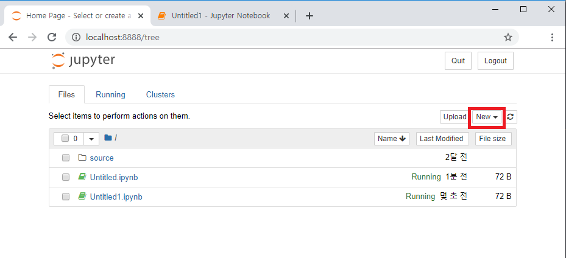
右上のnewボタンを押下しましょう。
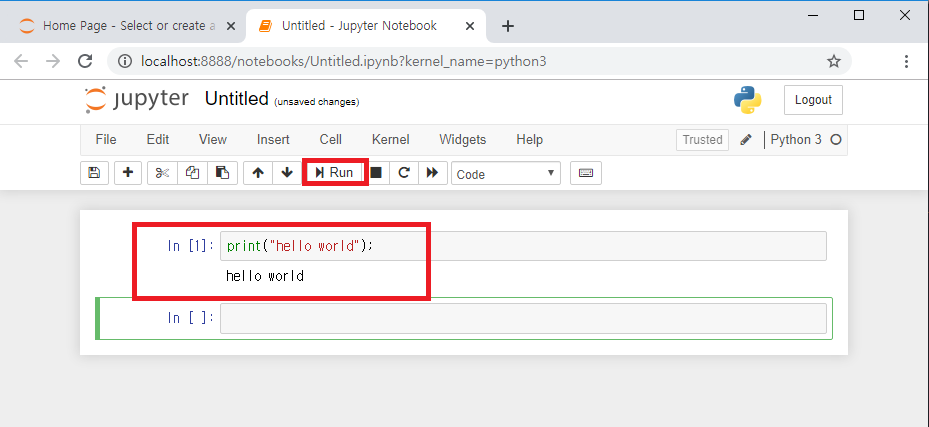
上のイメージみたいにprint("hello world")を入力してRunボタンを押下すると結果を確認できます。
Notepad++やサクラエディタ、Vidual studio codeで作成してもよいです。
ここまでPython3をインストールする方法(Anacondaインストール)に関する説明でした。
ご不明なところや間違いところがあればコメントしてください。
- [Python] 15. クラスを継承する方法2020/06/15 18:20:07
- [Python] 14. クラスプロパティ(Property)2020/06/12 17:45:13
- [Python] 13. クラス関数(class method)とダック・タイピング、そして特殊メソッド2020/06/11 19:42:29
- [Python] 12. クラス(Class)を使う方法2020/06/10 19:33:33
- [Python] 11. デコレーター（Decorator）を使う方法2020/06/09 17:27:18
- [Python] 10. モジュールとパッケージ(import)2020/06/08 19:07:50
- [Python] 09. 例外処理する方法2020/06/05 17:11:47
- [Python] 08. ジェネレータ(Generator)2020/06/04 18:46:08
- [Python] 07. globalとnonlocal2020/06/03 20:34:49
- [Python] 06. 関数(function) - インライン関数、callbak、ラムダ(lambda)そしてクロージャ2020/06/02 20:51:22
- [Python] 05. コンプリヘンション(Comprehension)を使用する方法2020/06/01 19:38:58
- [Python] 04. 制御文(if, while, for, break, continue)とインデント2020/05/29 21:09:08
- [Python] 03. Pythonでリスト(list)とタプル(tuple)、そしてディクショナリ(dictionary)、セット(set)2020/05/27 18:49:08
- [Python] 02. データタイプ、変数宣言そしてコメントする方法2020/05/26 18:16:52
- [Python] 01. Python3をインストールする方法(Anacondaインストール)2020/05/25 19:02:44
- [Design pattern] 1-4. デザインパターンの抽象ファクトリーパターン(Abstract factory pattern)2021/10/15 19:31:03
- [Project design] 要件定義(要求事項整理)2021/10/15 19:28:58
- [C#] 52. Reflection機能を使い方 - Variable2021/10/15 19:27:37
- [Project design] プロジェクトを工程(ウォーターフォール vs アジャイル)2021/10/14 18:36:04
- [C#] 51. Reflection機能を使い方 - Method2021/10/14 18:34:21
- [C#] 50. Reflection機能を使い方 - Class2021/10/13 18:34:13
- [C#] 49. Operator(演算子)のオーバーロードを使い方2021/10/12 18:28:42
- [C#] 48. IEnumerableとIEnumerator、そしてyieldキーワード2021/10/11 19:49:33
- [C#] 47. Nugetを使い方(外部ライブラリ)とデータベース(MariaDB(Mysql))を使い方、そしてトランザクション(Transaction)2021/10/08 18:58:57
- [Window] MariaDBをインストールする方法2021/10/08 18:56:05
- [C#] 46. データベース(MSSQL)に接続する方法2021/10/07 18:39:58
- [C#] 45. ネットワークソケット通信(Socket)を使い方2021/10/06 19:06:25
- [C#] 44. ファイル(FileInfo)とディレクトリ(DirectoryInfo)を扱い2021/10/05 19:29:34
- [C#] 43. ストリーム(Stream)とバイナリ(byte[])、エンコード(Encoding)、そしてusingを使い方とIDisposableインターフェース2021/10/04 18:33:04
- [C#] 42. ファイルを扱い(IO)とファイルメタデータ(FileInfo)を使い方2021/10/01 20:10:21